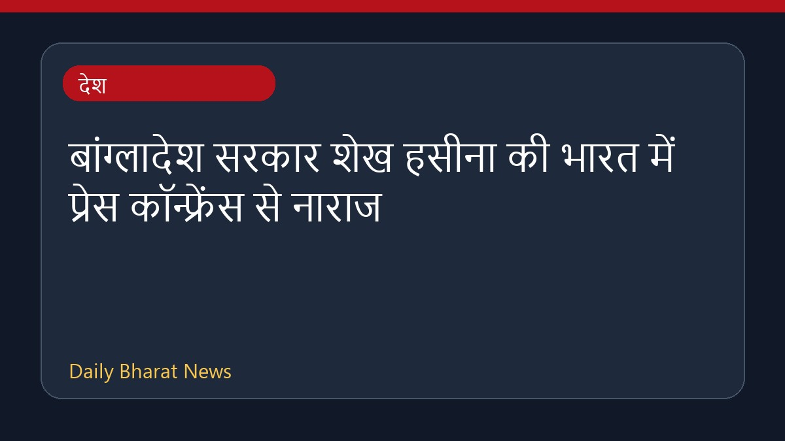

बांग्लादेश सरकार शेख हसीना की भारत में प्रेस कॉन्फ्रेंस से नाराज

बांग्लादेश सरकार ने भारत में शेख हसीना की प्रेस कॉन्फ्रेंस पर गहरी नाराजगी जताई है। इस बीच, शेख हसीना ने दिसंबर में बांग्लादेश लौटने और गिरफ्तारी या मौत की सजा का सामना करने के लिए तैयार रहने की बात कही है। साथ ही, उनके बेटे ने चेतावनी दी है कि बांग्लादेश के एक और पाकिस्तान बनने का खतरा है। तख्तापलट के बाद यह शेख हसीना की पहली प्रेस कॉन्फ्रेंस थी। इस मामले में विस्तृत जानकारी अभी सीमित है।
मूल स्रोत: India News Sources
Bangladesh government ‘outraged’ over Sheikh Hasina’s press conference in India - thehindu.com ↗
Bangladesh government ‘outraged’ over Sheikh Hasina’s press conference in India - thehindu.com ↗